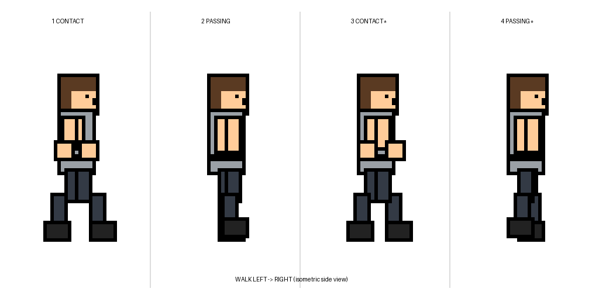

Pixel-Art Walk Cycle — 4 Frames (2:1)
RimWorld-style character walking left to right, isometric side view. Grey tunic, dark pants, thick outlines, flat colors.

1 — Contact
Left leg forward, right leg back. Arm counter-swing.
2 — Passing
Legs together mid-stride, weight over support foot.
3 — Opposite contact
Right leg forward, left leg back. Opposite arm swing.
4 — Opposite passing
Mirror of passing, slight lift for loop continuity.